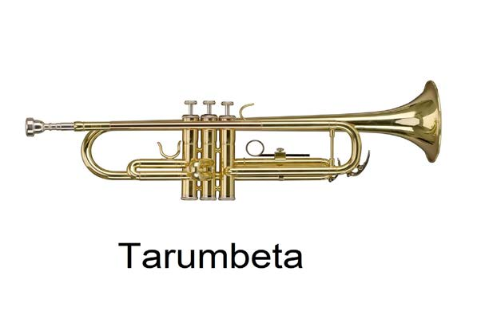

maalumu inayoweza kufanya muziki kuwa wa kuvutia na wenye ladha na hisia tofauti. Ala hizi zinaweza kuongeza uzuri katika muziki kwa kutoa sauti zinazoendana na sauti za waimbaji au ala nyingine.
Aina za ala za muziki
Ala za muziki zimegawanyika katika makundi mbalimbali. Makundi haya ni kama vile; ala za kupuliza, ala za kugonga, ala za nyuzi na ala za kutikisa. Ala hizi zipo za aina tofauti zinazoweza kupatikana katika jamii mbalimbali duniani.
Ala za kupuliza
Hizi ni aina za ala za muziki ambazo mpigaji anahitaji kupuliza hewa ndani yake ili zitoe sauti. Mfano wa ala hizi ni kama vile tarumbeta, baragumu, filimbi, lipenenga na lilandi. Ala hizi zinaweza kutoa sauti za juu na za chini kwa kutumia njia tofauti za kupuliza. Kielelezo namba 1 kinaonesha baadhi ya ala za kupuliza.
